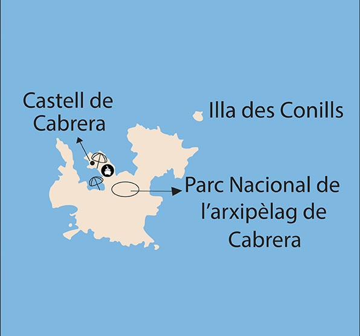

CABRERA
L’illa de Cabrera està situada al sud de l’illa de Mallorca. Pertany al terme municipal de Palma de Mallorca, específicament al Districte Centre.
Una illa que és Parc Nacional, amb molta història, amb oaisatges molt bonics i platges d’aigües cristal·lines.
